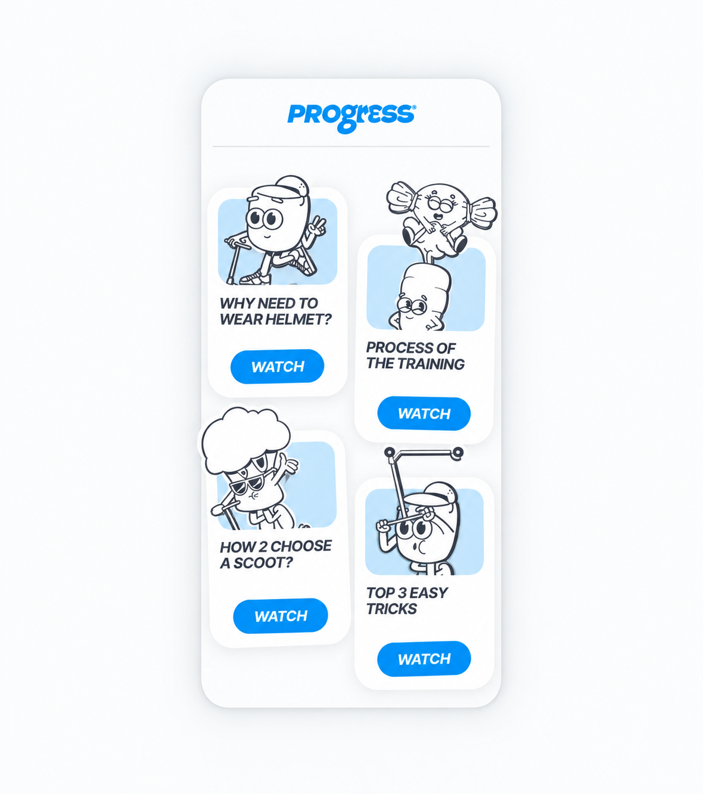
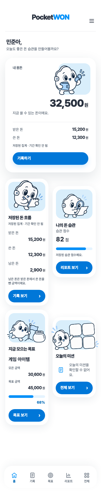

PocketWON · 레퍼런스 비교
왼쪽은 제공된 레퍼런스, 오른쪽은 실제 Chromium에서 캡처한 390px Home입니다. 오른쪽 화면의 금액·텍스트·버튼·차트·카드는 모두 프런트엔드 코드로 렌더링됩니다.
제공된 레퍼런스
구현된 PocketWON
실행 화면을 확인하고 보정한 부분
- 흰색 카드·하늘색 패널·청회색 선화·파란 pill CTA의 대비와 28px stagger 리듬을 적용했습니다.
- 마스코트의 투명 여백을 고려해 summary artwork를 확대하고 패널 경계 밖으로 노출했습니다.
- 좁은 카드의 금액은 한 열로 정리해 숫자 겹침과 불필요한 축약을 줄였습니다.
- 모바일 도크를 화면 바닥에서 12px 띄우고, 200% 글자 크기와 safe area에서 마지막 카드를 확인할 수 있게 했습니다.
- 레퍼런스의 밝은 accent #0190F8을 유지하며, 흰 글자가 있는 CTA는 4.5:1 대비를 충족하는 #0077D8을 사용했습니다.
시각 검증 67개 · 전체 회귀 검증 396개